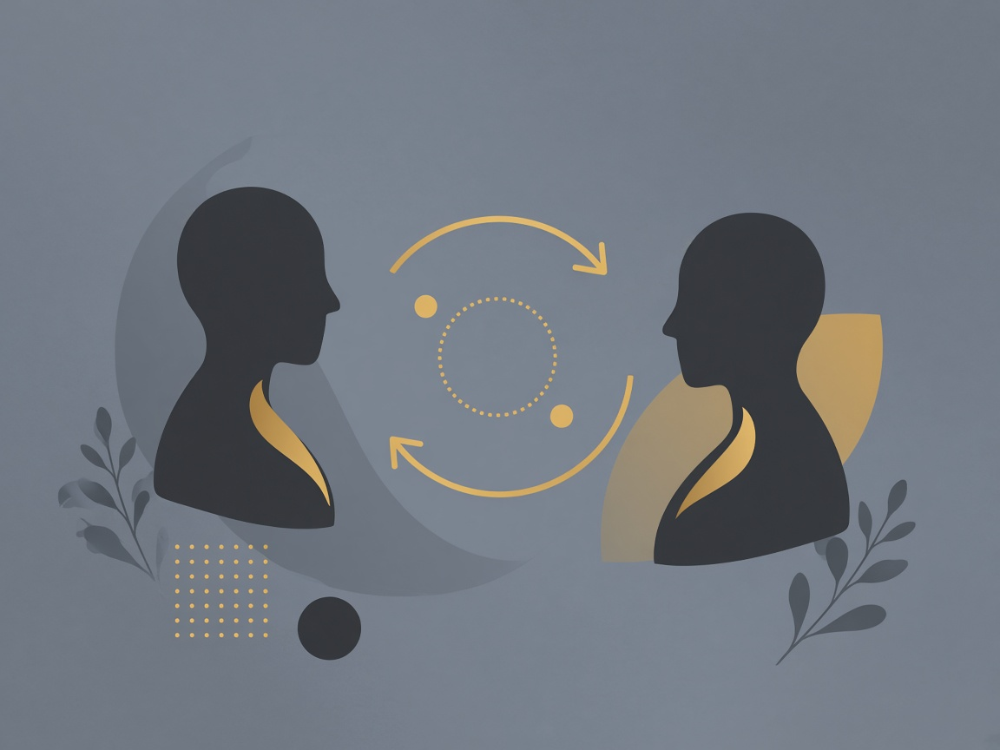
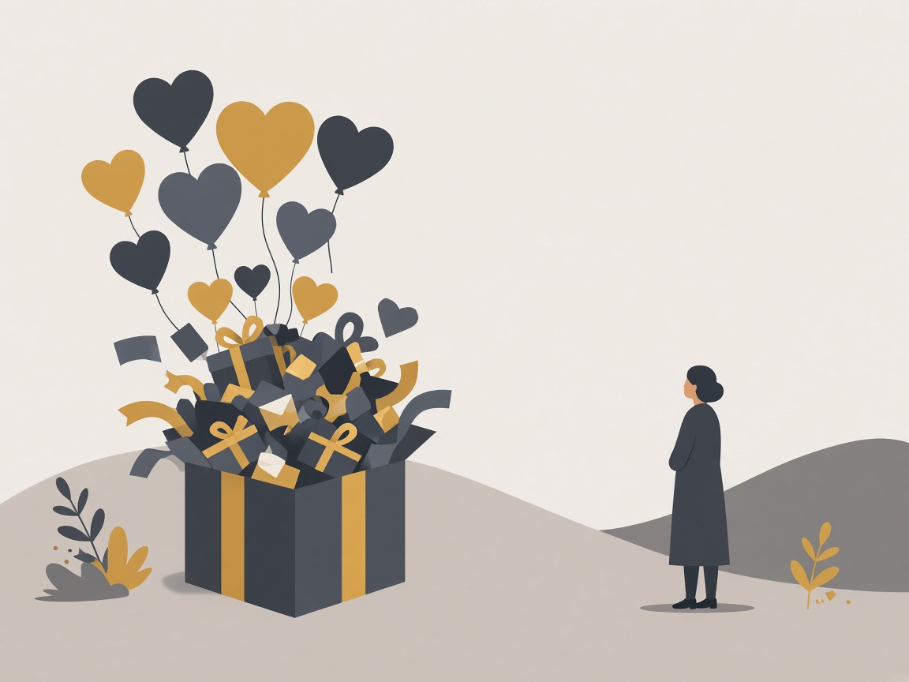
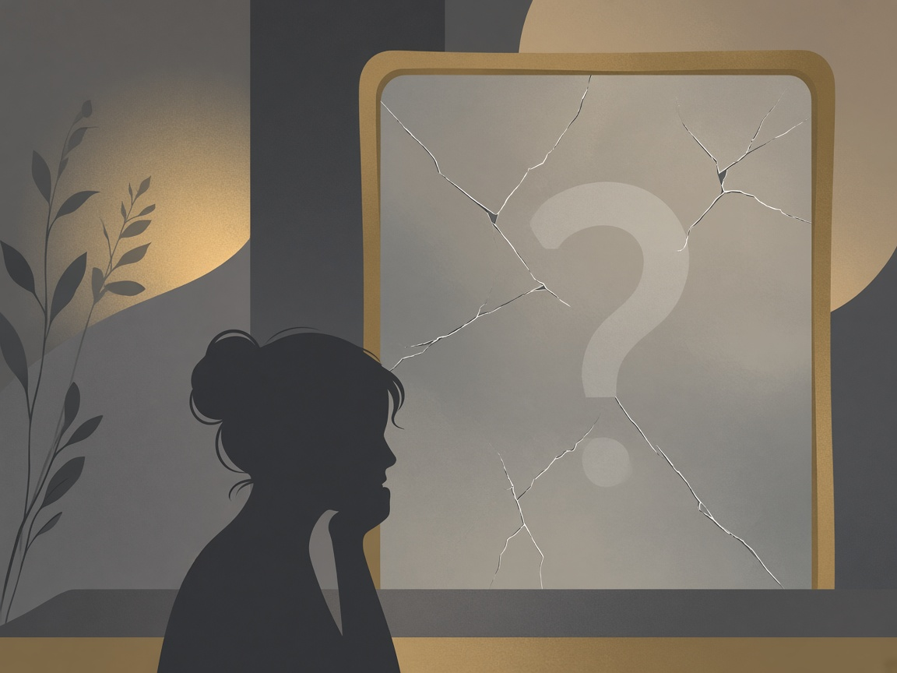
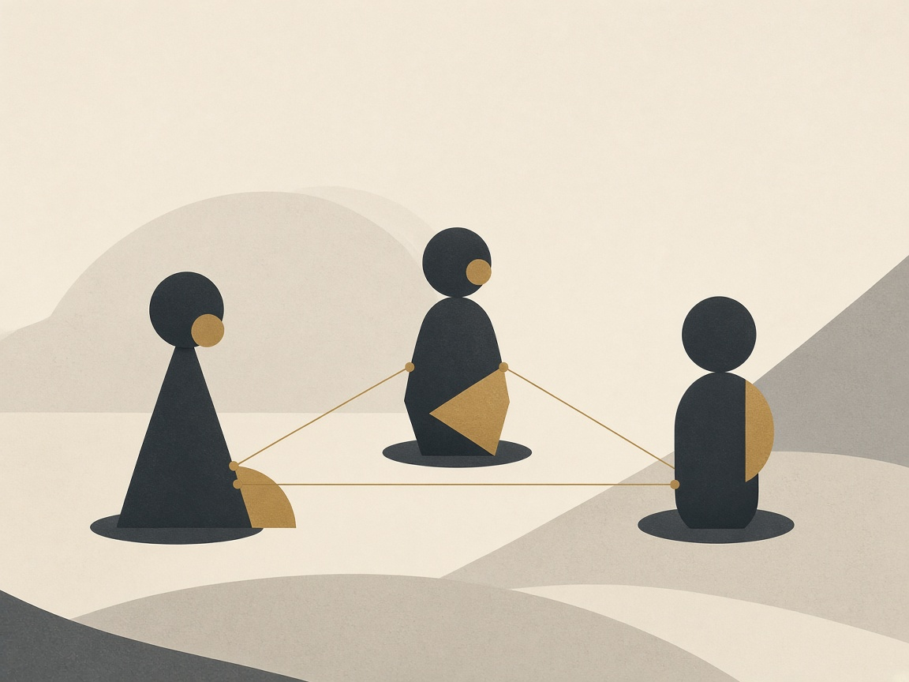
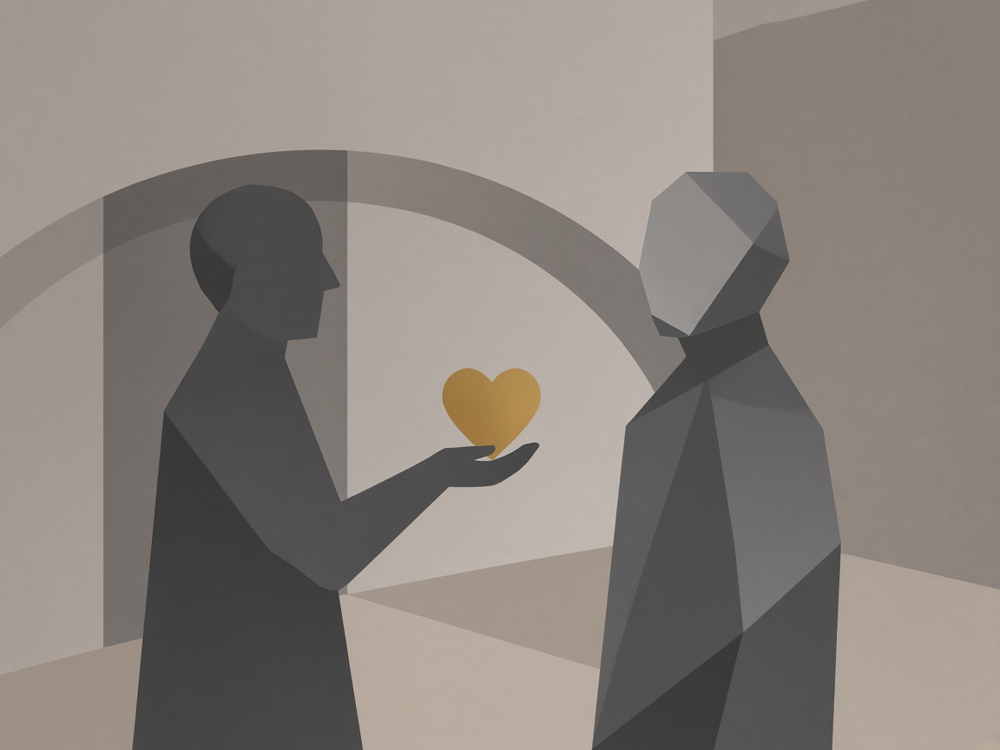
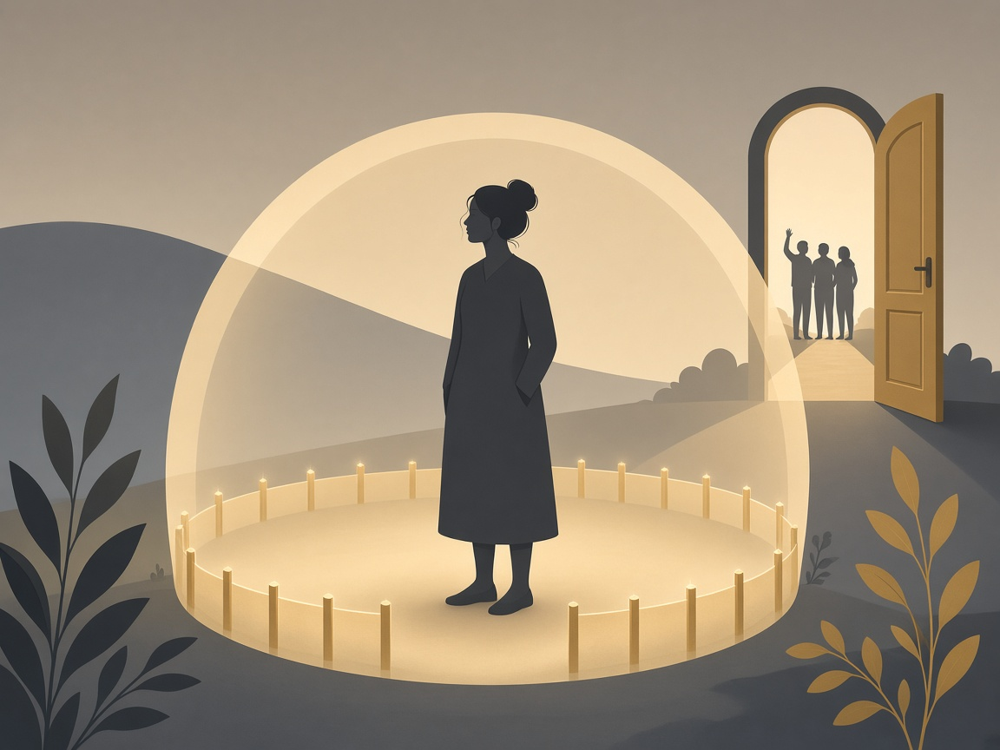

Stay steady · education · 18+
Learn & strength
Short lessons on relationship patterns — and how to stay grounded while you write dated facts. In Companion Notes and here.
Educational information — not a diagnosis. Only a qualified professional can diagnose. This material does not claim anyone “is a narcissist,” prove NPD, or replace counseling or legal advice. Adults 18+ only.
What people mean by narcissistic patterns
Shorthand for cycles some people describe — idealize, devalue, discard — plus control through praise, blame, or silence. Those words describe observed behaviors, not a medical label an app can assign.
For personal records or possible later presentation of facts, focus on dates, what happened, and supporting files — not trait labels as legal findings.

Common patterns
Each card: what it can look like, and what you can do in the moment.
In Companion Notes, open Document today / Activity log, tag a pattern, then tap Learn on that tag to jump here. Tags are educational labels — not diagnoses.
- Love bombing — intense early affection; slow the pace; keep plans with friends.
- Gaslighting — denying events; write what you recall; save messages.
- Triangulation — pulling a third person in; stay out of comparisons.
- Discard / silent treatment — sudden withdrawal; protect routines; note dates.
- Lack of empathy — dismissing hurt; name your need once; step back if ignored.
- Entitlement — double standards; hold one clear boundary; record the ask.




Stay steady — boundaries & support
Boundaries are limits you set for yourself. Lean on friends, counseling, and generic hotlines when you need them. Seek local professional help — this site does not give jurisdiction-specific legal advice.
If you feel in danger, contact local emergency services or a trusted support network.

Moving on after documenting
Documenting can clarify patterns. Deciding next steps is yours. Prefer emotional distance and stability — not revenge framing. Court Package paths emphasize dated factual incidents and evidence links.
Educational information — not a diagnosis. Only a qualified professional can diagnose. Discretion / Companion Notes does not diagnose NPD or prove someone “is a narcissist” in court. Adults 18+ only.